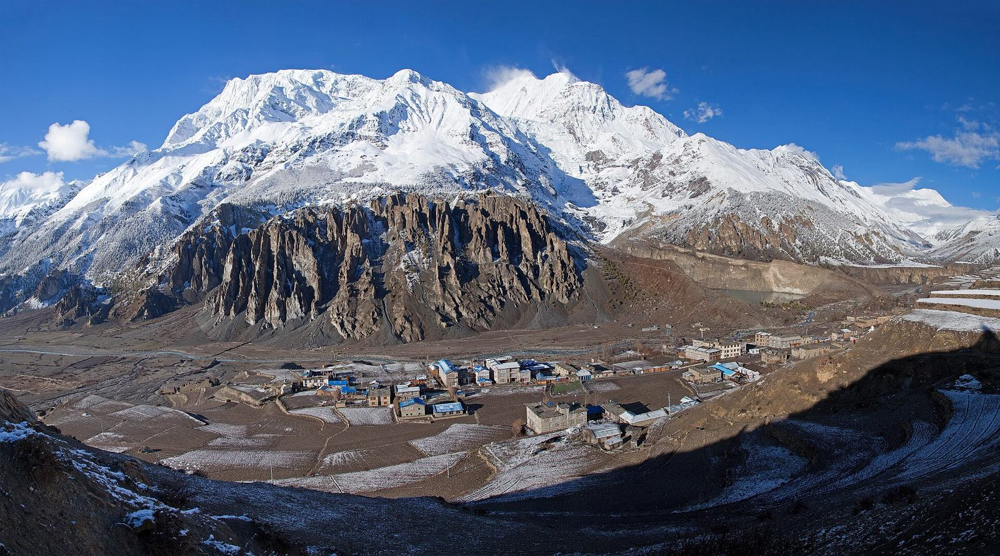
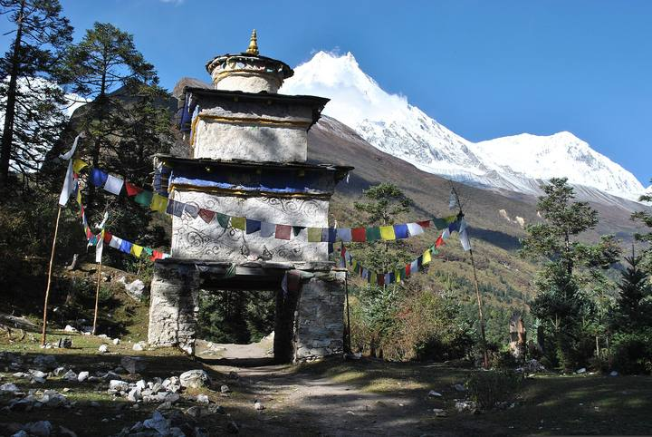

Annapurna Circuit
The classic loop up the Marsyangdi valley to Manang, over the Thorong La at 5,416 m and down to Muktinath and Jomsom, planned around the roads that now flank it.


- Duration
- 10–18 days
- Distance
- 107 kmapproximate
- Highest point
- 5,416 mThorong La · 17,769 ft
- Highest night
- 4,450 mThorong Phedi
- Difficulty
- ChallengingTeahouse lodges
- Best months
- Apr–May, Oct–Nov
Is this trek right for me?
The walking
10 days in all. Most walking days are 5 to 6 hours on foot, and the longest is about 10 hours. Long days and several nights above 4,000 m, or a pass above 5,000 m.
The height
You sleep as high as 4,450 m. Most people feel the altitude at this height. The plan includes the rest days you need: do not shorten it.
Where you sleep
In lodges every night: a simple twin room, a shared bathroom and hot meals in a warm dining room.
The help you need
The rules require a licensed guide on this route. A porter to carry your bag is your choice.
What it costs
A guided trip with a trekking company usually costs USD 800 to 1,250 a person, going by the prices 9 companies published for 2026.
Overview
The Annapurna Circuit goes up one great valley and down another. It follows the Marsyangdi north and west from the rice country of Lamjung to the dry, Tibetan-influenced villages of Manang, crosses the Thorong La between Manang and Mustang, and descends to the pilgrim town of Muktinath and the Kali Gandaki. In a little over a week the country changes from pine forest to high desert, and the skyline from Manaslu and the Annapurnas to Dhaulagiri.
It is no longer the three-week walk of the old guidebooks. A road now runs up the Marsyangdi as far as Manang and another climbs the Kali Gandaki to Muktinath, so the first and last weeks of the original route are mostly driven. Most trekkers take a jeep from Besisahar to Dharapani or Chame and finish at Jomsom, which leaves eight or nine walking days. Where road and trail coincide, marked side paths known as NATT (New Annapurna Trekking Trail) routes, painted red and white or blue and white, keep you on footpaths, often on the opposite bank or higher up the hillside.
The pass decides everything else. At 5,416 m the Thorong La is higher than Everest Base Camp, and the jeep road makes it easy to arrive in Manang at 3,500 m with no acclimatization at all. The plan below starts walking at Dharapani, takes the high trail through Ghyaru and Ngawal, spends two nights in Manang and then climbs in two short stages to Thorong Phedi. Cutting any of that to save a day is the commonest reason people fail to cross, or need help.
Highlights
- Crossing the Thorong La at 5,416 m
- The high trail through Ghyaru and Ngawal beneath Annapurna II, III and IV
- Manang and its side walks to glacier lakes and hermitages
- The curved rock wall of Paungda Danda above Bhratang
- Muktinath temple, with its 108 water spouts and natural flame
- The change from pine forest to the high desert of Mustang
Challenging: The trail is straightforward, but the pass day climbs nearly 1,000 m to 5,416 m and descends 1,650 m, and everything depends on acclimatizing properly first.
Altitude profile
Height at the end of each day, with the high points in between. Dots are the places you sleep.
The ascent rate is within the usual guideline of about 500 m of sleeping altitude a day above 3,000 m. People still differ, so watch for symptoms. Open in the acclimatization checker.
Day by day
About 37–47 h of walking in total. Times are for a steady pace with short breaks; add more for photos and tea.
-
Day1
Drive to Besisahar, jeep to Dharapani
Pokhara to Besisahar to Dharapani
Bus to Besisahar, four to five hours from Pokhara or six to seven from Kathmandu, then three to four hours by shared jeep up the Marsyangdi gorge. The road is rough and narrow. Permits are checked at Dharapani, where the Manaslu trail comes in.
16 places to stay in Dharapani, such as Phulbari Hostel & Restaurant, Hotel Gurkha's Inn & Restaurant and Manaslu Hotel Restaurant. See them
Travel day- Sleep at
- 1,860 m
- Change
- +1,038 m
- Jeep
- 7–9 h
-
Day2
Dharapani to Chame
Dharapani to Timang to Koto to Chame
Follow the road and its footpath shortcuts through Bagarchhap to Danakyu, then take the steep forest trail up to Timang, which leaves the road behind and looks back at Manaslu. An easier stretch through Thanchok and Koto leads to Chame, with Annapurna II and Lamjung Himal ahead.
19 places to stay in Chame, such as Eagle Eye Hotel, Royal Garden Hotel and Tibet Hotel. See them
- Sleep at
- 2,670 m
- Change
- +810 m
- High point
- 2,750 m
- Walking
- 5–6 h
- Distance
- 16 km
-
Day3
Chame to Upper Pisang
Chame to Bhratang to Dhikur Pokhari to Upper Pisang
Pine forest and apple orchards to Bhratang, then the valley bends beneath the great curved slab of Paungda Danda. After Dhikur Pokhari leave the road, cross the river and climb to Upper Pisang. You are now above 3,000 m, so slow down and keep the afternoon easy.
18 places to stay in Upper Pisang, such as Yak & Yeti Hotel, Hotel Tukuche and Hotel Mountain Bridge. See them
- Sleep at
- 3,300 m
- Change
- +630 m
- Walking
- 5–6 h
- Distance
- 15 km
-
Day4
Upper Pisang to Manang by the high route
Upper Pisang to Ghyaru to Ngawal to Braga to Manang
The best day on the eastern side. A long set of switchbacks climbs about 400 m to Ghyaru, then a balcony trail runs to Ngawal with Annapurna II, III, IV and Gangapurna across the valley. Descend to the valley floor and walk on through Braga to Manang. Going high and sleeping lower helps you acclimatize.
20 places to stay in Manang, such as Ghale guest house, Xchongla Homestay and Thorong La. See them
- Sleep at
- 3,519 m
- Change
- +219 m
- High point
- 3,670 m
- Walking
- 6–7 h
- Distance
- 19 km
-
Day5
Acclimatization day in Manang
Manang to Praken Gompa to Manang
Do not skip this, and take a second day if you arrived by jeep or still have a headache. Climb to Praken Gompa above the village, or to the Chongkor viewpoint over Gangapurna Lake, come down for lunch, and go to the aid post's afternoon talk on altitude if it is running.
20 places to stay in Manang, such as Ghale guest house, Xchongla Homestay and Thorong La. See them
Rest day to get used to the height- Sleep at
- 3,519 m
- Change
- 0 m
- High point
- 3,945 m
- Walking
- 3–4 h
- Distance
- 4 km
-
Day6
Manang to Yak Kharka
Manang to Gunsang to Yak Kharka
A short stage on purpose. The trail climbs out of the Marsyangdi valley past Tanki Manang and Gunsang into the side valley that leads to the pass, through juniper scrub and yak pasture. Arrive by lunch, then walk a little higher in the afternoon and come back down.
7 places to stay in Yak Kharka, such as Hotel Gangapurna, Thorong Peak Hotel and Hotel Nyeshyang. See them
- Sleep at
- 4,018 m
- Change
- +499 m
- Walking
- 3–4 h
- Distance
- 10 km
-
Day7
Yak Kharka to Thorong Phedi
Yak Kharka to Ledar to Thorong Phedi
An hour to Ledar, then down to a bridge and up to a narrow path across loose slopes where stones fall; cross without stopping. You reach Phedi by lunch. Walk part of the way toward High Camp in the afternoon, eat early and pack for a pre-dawn start.
3 places to stay in Thorong Phedi, such as Hotel New Phedi, Thorong Base Camp Lodge and Hilltop hotel. See them
- Sleep at
- 4,450 m
- Change
- +432 m
- Walking
- 3–4 h
- Distance
- 7 km
-
Day8
Over the Thorong La to Muktinath
Thorong Phedi to Thorong High Camp to Thorong La to Muktinath
Leave between four and five. A steep hour of zigzags reaches High Camp, then the trail climbs more gently over moraine, past several false summits, to the prayer flags on the pass. The descent is 1,650 m of loose trail and hard on the knees; tea shops begin at Chabarbu, about an hour above Muktinath.
17 places to stay in Muktinath, such as Town house, Hotel Moonlight and The Paths of Dream. See them
Pass day- Sleep at
- 3,760 m
- Change
- −690 m
- High point
- 5,416 m
- Walking
- 7–10 h
- Distance
- 16 km
-
Day9
Muktinath to Jomsom by Kagbeni
Muktinath to Jharkot to Kagbeni to Jomsom
Visit the temple early, then descend through Jharkot and Khinga to the mud-walled lanes of Kagbeni for lunch. The last three hours follow the Kali Gandaki riverbed and road into a strong afternoon headwind. Many people take a jeep from Muktinath or Kagbeni instead; the quieter footpath goes by Lubra.
44 places to stay in Jomsom, such as Shaligram, Jomsom Alpen Rose and Hotel Jomsom View. See them
- Sleep at
- 2,720 m
- Change
- −1,040 m
- Walking
- 5–6 h
- Distance
- 20 km
-
Day10
Fly or drive to Pokhara
Flights leave soon after dawn and stop once the valley wind rises, so cancellations are common. The alternative is eight to ten hours by bus or jeep down the Kali Gandaki through Tatopani and Beni. Keep a spare day before any onward travel.
Travel day- Sleep at
- 822 m
- Change
- −1,898 m
- Flight
- 1 h
Ways to change it
Start from Chame
A jeep to Chame saves a day and is now the commonest start. Add a night there, or a third night in Manang, to make up for arriving at 2,670 m by road.
The old trail from Bhulbhule
Some walkers still start in the lower Marsyangdi and use the trails through Bahundanda, Ghermu and Tal that keep off the road. It adds three to four days and helps acclimatization.
Tilicho Lake
A three-day detour from Manang through Khangsar to the lake at 4,919 m, rejoining the main trail at Yak Kharka. See the Tilicho Lake trek.
Walk on to Tatopani and Poon Hill
From Jomsom the full circuit continues down the Kali Gandaki through Marpha, Tukuche and Kalopani to Tatopani, then climbs to Ghorepani and ends at Nayapul. Add five to seven days.
Sleep at High Camp
Sleeping at Thorong High Camp takes an hour of steep climbing off the pass day, at the cost of a colder and higher night. It suits only those who are already sleeping well at altitude.
Route map
The map loads when you scroll here. It needs a connection the first time; tiles you have viewed stay available offline.
The solid line follows footpaths mapped in OpenStreetMap. It is a guide to where the route goes, not a navigation track: trails are rerouted after landslides, so follow the signs and people on the ground. Marker positions come from OpenStreetMap where we could match a place, and from our own estimates elsewhere.
Download the trail for a map app A GPX file with 107 km of mapped path and every stop. It opens in free apps such as Organic Maps.
When to go
- January: difficult
- February: difficult
- March: good
- April: best time
- May: best time
- June: difficult
- July: difficult
- August: difficult
- September: good
- October: best time
- November: best time
- December: good
October and November bring the most stable weather and the most people. April and May are warmer, with more afternoon cloud. In March and December the pass is usually crossable but can close for days after snowfall, and in January and February the lodges at Thorong Phedi and High Camp may shut. The monsoon is fairly dry in Manang, but landslides cut the road below Chame and cloud hides the peaks.
Permits and guide rules
Guide required. Since April 2023 the Nepal Tourism Board has required foreign trekkers in conservation areas to walk with a licensed guide, though checks on the trail are inconsistent. On this route a guide earns the fee by holding you to the acclimatization schedule, finding the side trails that avoid the road, and making the call on whether to start for the pass when the weather is doubtful.
ACAP
Conservation areaAnnapurna Conservation Area Permit · National Trust for Nature Conservation
| Foreign nationals | NPR 3,000 | person, single entry |
| SAARC nationals | NPR 1,000 | person, single entry |
Where: Online at NTNC's e-permit site, or in person at the Tourist Service Centre in Bhrikutimandap, Kathmandu, and the Nepal Tourism Board office in Pokhara. A permit issued at a trail checkpost costs double.
The fee includes tax and children under 10 do not need a permit. Paying online by card adds a 2.9% gateway charge. Covers every trek in the Annapurna range and Lower Mustang; Upper Mustang and Nar Phu need a restricted-area permit as well.
TIMS card
RegistrationTrekkers' Information Management System card · Nepal Tourism Board and the Trekking Agencies' Association of Nepal
| Foreign nationals | NPR 2,000 | person, per trek |
| SAARC nationals | NPR 1,000 | person, per trek |
Where: Only through a registered trekking agency, which applies in the Nepal Tourism Board's online system with your route and your guide's details. Individual trekkers can no longer buy one over the counter.
Since the revised rules of 31 March 2023 the card is tied to trekking with a licensed guide on the tourism board's listed routes. It is not used in Khumbu, where the municipality's Trek Card took its place in 2017. For restricted areas the published rules pull both ways: TAAN's pages say TIMS applies in every trekking area, restricted ones included, yet also list visitors holding Department of Immigration permits among those who do not need one, and agencies disagree. Your agency, which is compulsory there anyway, will know what the checkposts on your route ask for. Reports from 2025–26 describe patchy checks of the card, especially in Annapurna.
Agency required
Fees and rules change, sometimes mid-season. Treat these as a planning guide and confirm with the Nepal Tourism Board, the Department of Immigration or a registered agency before you travel. Last reviewed 2026-11. All permits and fees
Getting there
Besisahar is the road gateway, six to seven hours by bus from Kathmandu or four to five from Pokhara. Jeeps continue up the Marsyangdi on a rough road to Dharapani, Chame and Manang. The trek ends at Jomsom, which has morning flights and a long road to Pokhara.
-
Bus: Kathmandu to Besisahar · 6–7 hr
Direct buses and microbuses leave early in the morning. Many trekkers start from Kathmandu and only see Pokhara at the end.
-
Bus: Pokhara to Besisahar · 4–5 hr
Several morning departures.
-
Jeep: Besisahar to Dharapani · 3–4 hr
Shared jeeps leave when full. The road is rough and exposed in places and is often cut by landslides in the monsoon.
-
Jeep: Besisahar to Chame · 5–6 hr
A common shortcut that saves a day on foot. Buses have also begun running this stretch, but schedules change.
-
Flight: Jomsom to Pokhara · 20 min
Early-morning flights only, cancelled when wind or cloud builds. Book a day or two ahead in season.
-
Bus: Jomsom to Pokhara · 8–10 hr
By bus or jeep down the Kali Gandaki through Tatopani and Beni; the road is rough above Beni.
Hazards on this route
Altitude on the Thorong La
The pass is 5,416 m, and the jeep road lets people reach Manang far too quickly. Spend two nights in Manang, three if you drove up, and after that do not raise your sleeping height by more than about 500 m a night. If you have symptoms at Thorong Phedi, go down to Ledar or Yak Kharka. The aid post in Manang can assess you in season.
Storms and snow on the pass
Weather on the Thorong La changes fast. In October 2014 an unseasonal storm killed at least 43 people on and around the pass. Do not start if it is snowing or the forecast is poor, and turn back if you lose the marker poles. Lodge owners at Phedi know the conditions.
Road traffic and dust
Between Dharapani and Manang, and again below Muktinath, you share stretches with jeeps, buses and motorbikes. Take the marked side trails where they exist, and cover your nose and mouth on the Kali Gandaki road.
Landslides and rockfall
The road below Chame is cut in most monsoons, and the slope between Ledar and Thorong Phedi sheds stones. Cross slide areas one person at a time, without stopping.
Wind in the Kali Gandaki
From late morning a strong wind blows up the valley between Jomsom and Kagbeni, carrying sand and grit. Walk this section early in the day, or ride.
Practical tips
- Carry cash for the whole trek. The machines in Chame and Jomsom cannot be relied on, and there is nothing dependable in between.
- Look for the red-and-white and blue-and-white paint marks of the NATT trails wherever the route meets the road.
- Take the upper trail from Upper Pisang even if you are tired. The lower route follows the road and misses the best views.
- For the pass carry two litres of water in bottles that will not freeze, snacks, sunglasses and, after any snowfall, microspikes.
- Leave Thorong Phedi no later than five. Wind on the pass strengthens from about ten.
- If you are not sleeping well at Phedi's height, do not move up to High Camp for the night.
Cash machines on the route: Besisahar, Chame, Jomsom. They run out of cash and go offline, so carry what you need from Pokhara. Work out how much.
Plan this trek
Choose your dates and see the whole trip on one page: where you sleep each night, who can help you, what it may cost and the papers you need. Then ask for a price.
More tools for this trek
Who can help you on this trek
The rules require a licensed guide on this route. A porter to carry your bag is your choice.
-
A trekking company that arranges everythingUsually USD 800 to 1,250 a person for everything on the trek.
-
A guide, and a porter to carry your bagAbout USD 25 to 40 a day for the guide and USD 18 to 25 for the porter.
-
A guideAbout USD 25 to 40 a day.
-
A porter to carry your bagThe rules require a licensed guide on this route.
-
On your ownThe rules require a licensed guide on this route.
Do you work on the Annapurna Circuit route as a guide, porter or company? Join TrekkSewa.
Quick answers
How long does the Annapurna Circuit trek take?
Most people take 10–18 days. The itinerary on this page is 10 days, including 1 day for rest and acclimatization.
How high does the Annapurna Circuit trek go?
The highest point is Thorong La at 5,416 m (17,769 ft). The highest place you sleep is Thorong Phedi at 4,450 m.
How difficult is it?
We grade it challenging. The trail is straightforward, but the pass day climbs nearly 1,000 m to 5,416 m and descends 1,650 m, and everything depends on acclimatizing properly first.
Which permits do I need?
ACAP, TIMS card. Fees and where to get each one are listed in the permits section above.
Do I need a guide?
Since April 2023 the Nepal Tourism Board has required foreign trekkers in conservation areas to walk with a licensed guide, though checks on the trail are inconsistent. On this route a guide earns the fee by holding you to the acclimatization schedule, finding the side trails that avoid the road, and making the call on whether to start for the pass when the weather is doubtful.
When is the best time to go?
Apr–May, Oct–Nov are best. October and November bring the most stable weather and the most people. April and May are warmer, with more afternoon cloud. In March and December the pass is usually crossable but can close for days after snowfall, and in January and February the lodges at Thorong Phedi and High Camp may shut. The monsoon is fairly dry in Manang, but landslides cut the road below Chame and cloud hides the peaks.
The stages on this route are well established. Reviewed 2026-11. Trails, lodges and rules change; confirm locally before you rely on any detail. Report a correction.
Similar treks
More in Annapurna Annapurna
Annapurna
Tilicho Lake
A glacial lake at 4,919 m, then on over the Thorong La
 Annapurna
Annapurna
Nar Phu Valley
Two stone villages of Tibetan origin and a 5,320 m pass north of Annapurna
 Mustang
Mustang
Jomsom & Muktinath
Pilgrim shrine, apple villages and the Kali Gandaki between two 8,000 m peaks

ManasluManaslu Circuit
Around the world's eighth highest mountain by the 5,106 m Larkya La